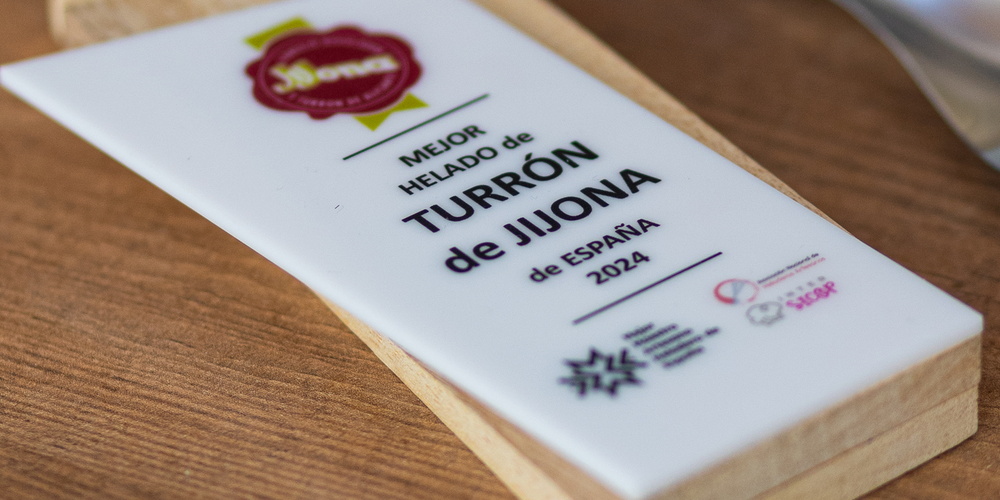
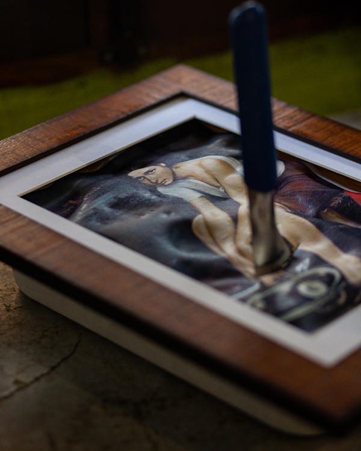

Premio al Mejor Helado de Turrón de España 2024
En nuestra heladería artesana en Córdoba nos enorgullece haber sido reconocidos en 2024 como los creadores del mejor helado de turrón de España, una distinción otorgada por expertos del sector heladero. Este galardón representa nuestra dedicación a la excelencia y a preservar el arte de la heladería tradicional cordobesa. ¿El secreto de nuestro turrón? Hacerlo CORDOBÉS: miel de la sierra de Córdoba y una mezcla de dos vinos de Moriles, un amontillado y un oloroso de Bodegas El Monte.
La cubeta estaba compuesta como si se tratase de un cuadro, con una lámina comestible con la imagen de "La Chiquita Piconera" de D. Julio Romero de Torres, que descubrimos ante el jurado habiendo previamente ahumado con alucema (lavanda), como se usaba en los braseros de picón cordobeses.

Contamos con productores locales para la elaboración de muchos de nuestros helados como Calaveruela Quesería, COVAP, Bodegas El Monte, Bodegas Robles, El huerto de Don Luis y productores de la provincia
TODOS los helados que ofrecemos en nuestra heladería son elaborados por NUESTRO MAESTRO HELADERO , José Ambrosio, siguiendo las recetas tradicionales e innovando con las suyas propias
Estamos renovando nuestro conocimiento con cursos y formaciones para ampliar el abanico de helados que podemos ofrecer tanto en helado tradicional como gastronómico.
Día tras día, en el obrador aplicamos nuevas técnicas a los ingredientes, tratando de extraer todo el sabor, haciendo nuevas combinaciones, para que la experiencia al degustarlo genere un recuerdo dulce inolvidable
Nos encontramos en el barrio del Campo de la Verdad, en Córdoba.
Paseo Cristo del Descendimiento 4, Local 7 — 14009 Córdoba
Horario: miércoles a domingo, de 17:30 a 00:30 h
Teléfono: +34 624 564 326 | WhatsApp: